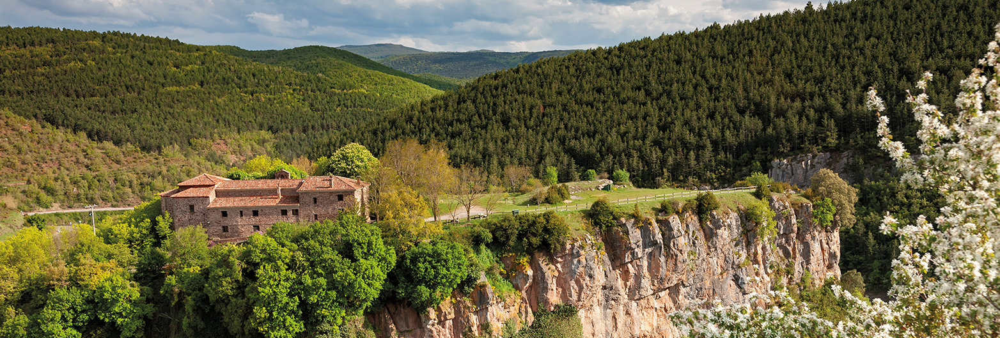
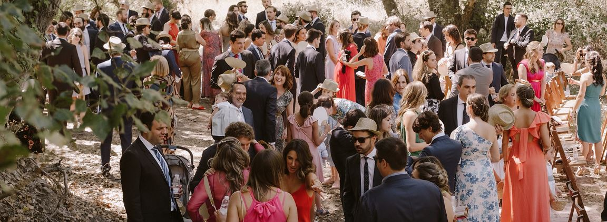
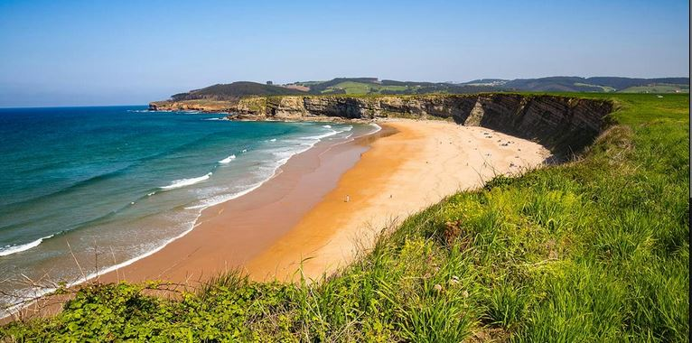

Information
Notera att delar av informationen nedan inte är helt spikad så det kan vara nyttigt med återbesök av hemsidan i början på Mars. Till exempel så vet vi inte exakta tider för bussar till och från eventet och exakt vad vi gör dagarna innan. Jag kommer också fylla på med information på restips, restauranger osv under februari. Denna sida är lite av ett intro till ett spansk bröllop, den spanska sidan som Carmen skriver är betydligt kortare.
Hur är ett Spansk Bröllop?
Detta är ett spansks dagbröllop. Att det är ett dagbröllop i Spanien har inget att göra med att man håller sig till dagtid, utan att bröllopet sker innan ~14:00. Efter bröllopet så följer en 2-3h lång cocktail och sen börjar lunchen. Efter lunchen som slutar runt 18-20 så är det kaffe och sist är det öppen bar in på småtimmarna. Det låter konstigt att lunchen slutar vid 19:00 men så är det, fråga mig inte varför, ingen jag frågat har än så länge lyckats svara på det. Hela grejen var lite udda för mig första gångerna så jag går igenom detaljer nedan.
Snabbinfo
Bröllopet är i regionen La Rioja, Spanien. Ceremonin är i en liten kyrka som heter Santuario de Nuestra señora de Tómalos (bilden ovan). Vi kommer ha cocktailen, lunchen och kalaset precis utanför. Det kommer gå bussar till ceremonin från Logroño och Torrecilla. Samma bussar tar er tillbaka efter eventet. Man kan också ta bilen men det finns få parkeringar så du kommer nog få parkera en bit bort. Under själva dagen så kommer vi ta hand om er från att ni stiger på bussen till och med att ni kommer tillbaka.
Ni behöver ta er till La Rioja och hitta någonstans a bo. Under rubriken "Detaljer" så kommer jag fylla på med på boenden, resvägar etc eftersom. Vi kommer arrangera några event under dagarna innan till exempel besök på vingård och en pintxorunda kvällen innan. Det är inga presenter på de spanska bröllop utan det man men ger en gåva av kontanter/swish på ca 150 euro per person, man får det tillbaka på mat och dryck ofttast och så står värdarna för resten. Vi förstår även att det kan vara svårt att spika boende direkt men om OSA kan man säga två saker. Angående maten, bordsplacering osv så är OSA en månad innan, alltså 15-Juni (gärna mycket tidigare). När det kommer till resa och boende så är det snarare det omvända, inom en månad kommer det vara betydligt svårare att lösa resa, priser på vanliga flyg kommer gå upp och hotell kommer vara mer uppbokade. Främst så kommer vi redan ha beslutat om vi kommer charta ett flyg under februari och har man inte bestämt sig så missar man det. Vi skapade en Whatsappgrupp för så att gäster kan samordna, komma i kontakt med varandra etc: whatsapp Grupp . Enligt mig så är La rioja och hela norra Spanien lite av en oslipad diamant, eller i alla fall opal och jag är inte ensam om detta; WashitongPost . Jag kommer lägga till tipps under rubriken "Annat" så som restauranger, platser i Logroño och i närheten om har lyxen att kunna komma lite tidigare eller stanna efter.
Vad ska jag ha på mig?
Spanjorer tar nästan alla möjligheter att använda finkläderna och bröllop är inget undantag. För herrarna så är det inga problem, en bra, aningen mörkare kostym (grå, blå eller svart) med slips funkar. Nästan alla har skjorta med manschettknappar men det är inte viktigt utan mer en detalj. För damerna är det cocktailklänning och man kan välja att ha hatt eller inte. Använd skor som funkar på en gräsmatta. Det kommer finnas knappar man sätter på klacken men stilettklackar är lite knepigt. vi kommer dela ut lågskor "alpargatas" som man kan använda för att dansa i.
Lärdomar som Svensk på spanska Bröllop
- Sov ordentligt innan, ta gärna sovmorgon, det är 12h eller mer med mat och dryck.
- Planera för att vara lite hungrig innan cocktailen. Det är rätt mycket mat som serveras på rad. Först är det 2-3h cocktail och direkt efter är det lunch i 3h. Att klämma in en lunch 11:40 lär man ångra.
- Akta alkoholen. Det är ingen brådska och det kommer antagligen vara varmt och svettigt. Det är gott vin precis överallt och nästan allt som serveras smakar bättre med vin (ost, jamon, etc). Till och med spanjorer kan bli överförfriskade om de inte aktar sig. Drick mer vatten än vanligt. Senare på kvällen när det blivit lite svalare så är det öppen bar.
- Det är väldigt lite tal under "Lunchen" och det finns ingen Toastmaster. Mor/Far eller nära släkting kommer ha ett kort tal men det är mer eller mindre vara allt. Man går istället och besöker bort och säger hej under måltiden, cocktailen etc. Mer formella tal är snarare i kyrkan.
- (mindre detalj) Generellt så är rätter uppbydga så att man ämnar att lyfta fram en eller få smaker från bra råvaor. Har man en bra Jamon så är det Jamon som gäller eller om du beställer en entrecote så får du kött, salt och ett glas/flaska rött vin. Det är köttet och vinet som skall tala och tro inte att du ska få någon sås. Med Pitxos så är det helt fritt fram för att mixa vadsom.
Detaljer
Bröllopet är i juli så de flesta svenskarna har semester. Om man har lyxen så kan jag verkligen rekommendera att kombinera bröllopet med en vistelse längs med norra kusten i Cantabria. Det är fullt med spanjorer där i augusti så det är perfekt att åka lite innan. Nordkusten är inte lika solsäker som kusten till söder så det kan regna men jag har aldrig haft problem med detta. Om man gillar Barcelona eller sydkuster mer så är det också väldigt trevligt, jag och Carmen seglade runt Cadaqués i fjol vilket var supernajs. Jag har hur mycket rekommendationer för restauranger och resmål som helst men först det viktiga.
Om svar anhålles
Om man går tillbaka till startsidan så finns det en flik som heter, "Register" när man anmäler sig till bröllopet. Det är ju ditt namn, och din eventuella +1. Viktigt är att ni registrerar er för varje "par" och inte per grupp. Det är även en kryssruta om man vill att vi hämtar upp er i Logroño eller Torrecilla. Det är ju ganska uppenbart vilken man väljer om man vet vart man bor men vet man inte så klickar man i båda. Om man tänkte ta bil till ceremonin (rekomenderas generellt inte) så kan klickar man inte i någon ruta. I kommentarsfältet så kan ni skriva allergier eller något annat meddelande som ni tror är bra att veta. Jag tror att det är lättast att ta alla andra saker som flygbokning osv i whatsappgruppen som finns länkat lite här och där.
Att ta sig till La Rioja Logroño/Torrecilla
För att förenkla resandet så undersöker vi om det är värt att boka ett flyg. Innan vi kan boka detta så måste vi etablera intresset. Just nu ser det ut som det bästa förslaget är att flyga från Sveg, mellanlanda i Göteborg och sen till Logroño. Detta flyg skulle lämna 13de och åter 17de. Eftersom vi inte vet antal resande så är det svårt att säga något om priset men det kommer kosta mer än att åka kommersiellt men om man har tur så kan det kosta mindre om man inkluderar övernattning, måltider, parkering på Arlanda, transit, hyrbil etc. Värt att notera är att ett bokat flyg tar ca 4h i stället för en hel dag. Då detta är ett bokat flyg så kan vi egentligen göra lite som vi vill så vill man så kanske man kan åka ner med detta men stanna efter. Då får man se till att sälja sin returresa till någon som vill komma ner men stanna längre tillbaka till exempel. Hela denna konversation är perfekt att sköta i whatsappgruppen. För er som inte vet vad whatsapp är, hör med någon yngling så kan de hjälpa er. Det är också ett bra ställe att delar bilder osv från bröllopet och även efter.
Om man vill åka ner kommersiellt så är Madrid, Bilbao eller Barcelona smidigast. Man kan ibland hitta flyg till Logroño, Pamplona, Santander och Vitoria, men det är väldigt sällan. Jag åker nästan alltid till Madrid för att det är så bra förbindelser till Logroño. Åker man några stycken i grupp så är det alltid billigast och smidigast att hyra en bil. Det är brukar vara ganska billigt att hyra bil på inlandet och inte alls samma prisbild som på Mallorca. Vägarna i Spanien är bättre än i Sverige och även om de kör aggressivt i trafiken så är det inte i närheten av Rom, Sicilien eller Grekland.
- Madrid - Bra förbindelser, går flera bussar direkt från flygplatsen till Logroño. Det är ofta rimliga priser på hyrbilar på madrid Barajas (ganska oberoende på turism). Flygplatsen ligger på rätt sida av staden så det är bara att åka ut på motorvägen utan att snirkla runt nån ringled.
- Bilbao - Har kortaste körsträckan men med en vägavgift på 20 Euro. Det finns ingen smidig bussförbindelse mellan flygplatsen och Logroño utan man måste in till stan och härga. Ska man vara kvar kring norra kustlinjen är det Bilbao som gäller, möjligen Santander.
- Barcelona - Flyget är oftast billigast till Barcelona. Det är en längre körsträcka och priserna på bilar, hotell och resa varierar mycket mer med säsongen. Ganska få och långa resor med tåg och buss mellan Barcelona och Logroño.
Lite fler småsaker som jag från misstag har lärt mig efter många turer fram och tillbaka mellan Sverige och Spanien. Notera dock att jag ser flygtid som användbar tid och är därför ibland lite okänslig för långa resor. Denna sida var till exempel skapad under en extra seg resa.
- Jag kan starkt rekommendera Google flight för att söka på flera datum, från och till flera flygplatser samtidigt. Exempel på en Google flight sökning från Kastrup eller Göteborg till alla flygplatser i närheten av Logroño.
- Är man mer äventyrsam så kan man prova hitta billiga flyg genom Skyscanner. T ex Ryanair med eget byte osv. Men de gör jag bara om det är en markant skillnad från att åka vanligt och om jag reser med lätt bagage.
- Många gånger är det priseffektivt och trevligt att hyra bilen dagen efter man landar. För det man spar i biljettpris genom att vara flexibel med landningstider och att man bokar en hyrbil en dag mindre brukar man få ett billigt boende och en bra middag för. Bilbao är en rätt trevlig stad att stanna i och ringer man innan så brukar man kunna hämta bilen i stan och lämna tillbaka på flygplatsen, samma med Santander. Barcelona och Madrid brukar är de inte vara lika flexibla :). Se under "Annat" för rekommenderade restauranger och hotell.
Vi skapade en samordningsgrupp med whataspp. Vi tänkte det främst skulle vara frågor mellan gäster i stil med: "I have one seat free from Madrid to Logrno on thursday to sunday". I would like to take the flight down but not up, anyone interested in the return flight? Det är också ett bra ställe att dela foton och planer i Gruppen. Man når lättast denna genom följande länk: whatsapp Grupp
Man kan säkert åka tåg hit men jag har inte provat det och tror inte det är billigare eller smidigare men om man har några stopp på vägen så kanske det inte är en dum ide. Jag vet att Hamburg, Paris och Barcelona är typiska stopp. Renfe är största tågbolaget i Spanein. ALSA eller PLM om man är sugen på att åka buss istället för bil från flygplatsen.
Boende
Det är helt klart lättast att bo i Logroño. Logroño har flest boende, många bra restauranger och är känd för gatan Calle del Laurel. Logroño är i mitten av allt och vi antar att de flesta kommer bo i Logroño. Lista på bra boende i Logroño kan du se nedan, några har vi tjatat till oss lite rabatt men inget märkvärdigt så har man 15% genius hos booking eller likande så är det säkert bättre:
- Hotel Los Bracos. VI har reserverat ca 50 rum med lägre pris, först till kvarn.
- Pensión Sotelo
- Pensión Espolón
- Sercotel Portales
- Hotel Murrieta
- Hotel Mercure Carlton Rioja
- Hotel Gran Vía
- Hotel FG Logroño
- NH Logroño Herencia Rioja
- Eurostars Hoteles
Vi har bokat lite Boende i Torrecilla för familjemedlemmar. Det är inte alls som Logroño utan en lite by med få restauranger vilka är ok om man vet vad man ska köpa vart. Om man föredrar att vandra i bergen, bada i fors/pool eller grilla så kan Torrecilla vara rätt ställe. Jag tror dock att det är lättare och billigare att bo i Logroño och åkta till Torrecilla över dagen via bil eller buss om man verkligen vill. Om ni pratar ihop er som grupp så kan vi eventuellt hjälpa er hitta några hela lägenheter/hus som hyrs ut i Torrecilla. Det finns väldigt lite online.
Ceremonin och Dagen D
Denna del kommer fyllas på under februari och är i dagsläget halvklar. Ceremonin sker som sagt i Santuario de Nuestra señora de Tómalos där själva bröllopet startar kl 12:00 eller 13:00 (TBD). Det är en Katolsk kyrka men som är flexibla och gärna gifter protestanter eller "mixed". Carmens familj har ganska starka band till området och Miguel äger en stor del av marken runt kyrkan. Det nog bli så att vi kör varannan psalm på svenska och spanska men vi planerar på att köra på så mycket sång och personliga texter som möjligt. Är man sugen på bidra med en sång så hör gärna av dig.
Under cocktail så kan man få spelar lite låtar om man vill men annars är det typisk cocktail mingel med catering som springer runt och serverar. Under lunchen så är det i regel rätt uppstyrt till och med desserten. Man har en första dans efter desserten och sen startar i princip kalaset. Det kommer finnas lite olika plaster att återhämta sig runt om kring dansgolvet och man kommer kunna åka hem tidigare om man vill, ca 10:30. För de som bor i Logroño så kommer man kunna fortsätta efterrätt om man känner för det. Jag misstänker att de vettiga klubbarna stänger runt 07-08.
Bussar
Bussarna hämtar upp er antingen i Torrecilla eller Logroño på utsatta platser. När du registrerar dig för bröllopet så väljer du vilken upphämtningsplats du vill be upphämtad på. Det kommer gå två returresor, en vid XY:XY och end vid XY:XY.
För Logroño så åker bussen från Espolon kl XY:XY på Lördagen:
För Torrecilla så åker bussen nere från byn kl XY:XY på Lördagen:
Frisör och Styling
Finns lite stylister här och där, ska be Carmen fylla i dessa
"Pre-Boda"
Vi kommer ha några "Pre-boda" event dagen innan bröllopet (från och med onsdag) där vi bjuder in och samlar gäster för ett gemensamma event. Vad vi exakt gör varje dag är inte spikat ännu men det kommer arrangera ett besök på en vingård, en mysig picknick och en Pintxo runda på gatan Laurel.
Annat
Denna flik kommer fyllas på vid slutet på Febrari. Området La rioja är ju för vinturism. Först så kan man kika på Lorgrono; WashitongPost . Jag tycker han gör ett bra jobb att sälja staden men jag har lite invändningar. Jag tror att svenska gillar mer Bar Soriano och lita andra Pintxos men man behöver en mer komplett lista. Varje bar har sin specialitet och man behöver veta specialitet som hör till vilken bar. Vill man äta mer mat så är Ascuas bättre än vad washingtopost rekommenderar. Boegas finns också för olika stilar och Franco Espanola är najs men saknar vinrankor och utsikt, Marques De Risqal, Lopex de Haro, Muga är exempel på typiska bra ställen. Jag kommer uppdatera detta. Naturen runtomkring är supermysig med fina berg och generellt bra mat så jag rekommenderar starkt att man kombinerar besöket med lite sightseeing. Jag gillar "Rioja Alta" med Haro, Briones, Laguarida etc då utsikten är najs. Området är inte alls typiskt "spansk" utan väldigt grönt. Vill man ut och vandra så finns det flera ställen som är väldigt trevliga, Carmen gillar runt Torrecilla och jag mer för Sierra de cantabria.
Efter nordkusten så finns det väldigt fina stränder som inte är så turistiska, det är altanen och inte medelhavet men jag gillar verkligen Cantabria då detta är rätt billigt och stranden Langre. Annars är Oyabre rätt najs, den västra delen. Kommer nog lägga upp min La Lista och lite info om mysiga platser, restauranger som jag har provat och rekommenderar.
Hemsida till :Turistinfo
Guide for fyra dagar i La Rioja: Cuatro Dias